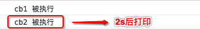
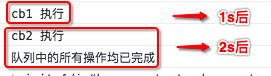

队列
队列是一种数据结构（ 先进先出 ），其实就是一个数组，只不过对这个数组的操作进行了某些的限制。从 “先进先出” 就可以看出对它的限制是什么了。
jQuery 的队列操作是基于缓存系统的，所以如果对缓存系统不了解的话，一定要先弄明白缓存系统。
jQuery 有关队列的工具方法
jQuery.queue
/**
* 入队操作
* @param { Element } elem 操作的 DOM 元素
* @param { String } type 队列的名字
* @param { Function } data 存储在队列中的数据，必须是 Function
* @return { Array } DOM 元素在私有缓存中以 type 为属性的值
*/
queue: function( elem, type, data ) {
var queue;
/**
* 1. 判断是否提供了可操作的 DOM 元素
*/
if ( elem ) {
/**
* 1.1 如果提供了队列的名字，那么将其后面拼接上 queue 作为该 DOM 元素队列的名字
* 如果没有提供队列的名字，那么将使用默认的 fx 后面拼接上 queue 作为该 DOM 元素队列的名字
* 然后获取私有缓存中，该 DOM 元素的对象中以队列的名字（ 上一步得到 ）为属性的值
*/
type = ( type || "fx" ) + "queue";
queue = data_priv.get( elem, type );
/**
* 1.2 判断是否提供了队列中的数据参数
* 如果提供了队列中的数据，那么就判断上一步得到的 queue 是否存在
* 如果是第一次执行该方法，肯定不存在（ 此时是 undefined ），所以直接进入 if
* 在 if 中，在私有缓存中为该 DOM 元素设置一个新的键值对，其中属性是队列的名字，值是一个数组，其中包含我们传递的数据
* 如果是第二次之后执行该方法，那么 queue 就是存在的，此时就会判断 data 是否是一个数组，如果是的话，就进入 if
* 在 if 中，在私有缓存中为该 DOM 元素设置一个新的键值对，替换原来的数据
* 如果是第二次之后执行该方法，并且提供的数据参数不是数组，那么就进入 else
* 在 else 中，直接将当前的数据参数（ 函数 ）push 到 queue 中（ 此时 queue 就是该 DOM 元素在私有缓存中，以队列名称为属性的值，该是是一个数组，其中的元素是函数 ）
*/
if ( data ) {
if ( !queue || jQuery.isArray( data ) ) {
queue = data_priv.access( elem, type, jQuery.makeArray(data) );
} else {
queue.push( data );
}
}
/**
* 1.3 返回该 DOM 元素在私有缓存中以 队列名称（ type ）为属性的值
*/
return queue || [];
}
}
示例一：queue 基本使用 —— 提供函数作为参数
<div id="box1"></div>
const $div1 = $( '#box1' );
function cb1 () {
console.log( 'cb1 执行' );
}
function cb2 () {
console.log( 'cb2 执行' );
}
/**
* 此时，队列的名称就是 my1queue，然后会从私有缓存中找出 #box1 的对象，从中获取以 my1queue 为属性的值（ 此时是 undefined ），并将其值保存在 queue 变量中
* 然后会进入 34 行的 if 中，因为此时 queue 是 undefiend，所以进入 35 行的 if 中
* 将参数 cb 放入一个数组中，然后调用私有缓存对象的 access 方法，为 #box1 设置一个以 my1queue 为属性，值为前面生成的数组
*/
$.queue( $div1[0], 'my1', cb1 );
/**
* 此时，私有缓存对象的 cache 就是
* {
* 0: {},
* 1: {
* my1queue: [ cb1 ]
* }
* }
*/
/**
* 此时， 队列的名称还是 my1queue，但是 queue 变量已经存在了（ 此时是 [ cb ] ），所以会判断第三个参数是否是数组，此例中不是，进入 else
* 直接将 cb2 push 到 queue 的数组中
*/
$.queue( $div1[0], 'my1', cb2 );
/**
* 此时，私有缓存对象的 cache 就是
* {
* 0: {},
* 1: {
* my1queue: [ cb1, cb2 ]
* }
* }
*/
示例一：queue 基本使用 —— 提供数组参数作为参数
还是基于示例一的所有变量
function cb3 () {
console.log( 'cb3 执行' );
}
function cb4 () {
console.log( 'cb4 执行' );
}
/**
* 此时， 队列的名称还是 my1queue，queue 变量是 [ cb1, cb2 ]，此时，queue 变量已经有值了，所以会判断第三个参数是否是数组，此例中是，所以进入 if
* 在 if 中，为 $box1 在私有缓存中的对象重新设置值，将 my1queue 属性对应的值重新设置为 [ cb3, cb4 ]
*/
$.queue( $div1[0], 'my1', [ cb3, cb4 ] );
/**
* 此时，私有缓存对象的 cache 就是
* {
* 0: {},
* 1: {
* my1queue: [ cb3, cb4 ]
* }
* }
*/
jQuery._queueHooks
该方法用于向 DOM 元素的私有缓存中再添加一个新的对象（ 以下称为 hooks 对象 ），其中包含一个 empty 属性，其值是一个回调对象，默认其中有一个回调，该回调专门用于清除该 DOM 元素的队列和 hooks 对象
_queueHooks: function( elem, type ) {
/**
* 将指定队列名称后拼接 queueHooks
* 从私有缓存中中获取 DOM 的对象中以 key 为属性的值（ 即 hooks 对象 ）
* 如果存在，直接返回
* 如果不存在，那么为 DOM 在私有缓存中的对象添加一个 empty 属性，该属性是一个回调对象，并且向回调队列中添加了一个回调
* 这个回调的作用就是将 DOM 元素的队列和 hooks 对象清空
*/
var key = type + "queueHooks";
return data_priv.get( elem, key ) || data_priv.access( elem, key, {
empty: jQuery.Callbacks("once memory").add(function() {
data_priv.remove( elem, [ type + "queue", key ] );
});
});
}
jQuery.dequeue
该方法用于将队列中的元素出队，因为队列中的每个元素都是函数，所以出队也就意味着将第一个函数弹出并执行
/**
* 出队操作
* @param { Element } elem 操作的 DOM 元素
* @param { String } type 队列名称
*/
dequeue: function( elem, type ) {
/**
* 1. 判断是否提供了队列名称
* 如果提供了，将其保存在 type 变量中
* 如果没提供，则保存默认的 fx
*/
type = type || "fx";
/**
* 2. 通过 $.queue 方法获取 elem 元素的队列，也就是在私有缓存中以 type 为属性的值，该值是一个数组，其中保存的是 elem 这个元素所对应队列中的所有操作（ 函数 ）
*/
var queue = jQuery.queue( elem, type ),
// 3. 保存队列出队前的长度
startLength = queue.length,
// 4. 将队列中第一个元素弹出，并保存其引用到 fn
fn = queue.shift(),
// 5. 调用 _queueHooks 方法获取 elem 的 hooks 对象，并将返回值保存在 hooks 变量中
hooks = jQuery._queueHooks( elem, type ),
// 6. 定义 next 方法，其中会调用 $.dequeue 进行出队操作
next = function() {
jQuery.dequeue( elem, type );
};
// If the fx queue is dequeued, always remove the progress sentinel
/**
* 7. 判断出队的元素是否是字符串 inprogress
* 如果是的话，则再进行一次出队操作，将元素保存在 fn 中，并将队列的长度 - 1
*/
if ( fn === "inprogress" ) {
fn = queue.shift();
startLength--;
}
/**
* 8. 判断 fn 是否存在，如果队列为空的话，那么 fn 就不存在了
*/
if ( fn ) {
// Add a progress sentinel to prevent the fx queue from being
// automatically dequeued
/**
* 8.1 判断是否是默认名称的队列
* 如果是的话，那么向此时队列的头部添加 inprogress 元素
*/
if ( type === "fx" ) {
queue.unshift( "inprogress" );
}
// clear up the last queue stop function
/**
* 8.2 删除 hooks 对象中的 stop 属性
*/
delete hooks.stop;
/**
* 8.3 调用前面出队的元素，并将其作用域设置为当前 DOM 元素，然后将 next 和 hooks 作为参数
*/
fn.call( elem, next, hooks );
}
/**
* 9. 如果此时队列中没有任何元素，并且 hooks 也存在，那么就调用其中的回调对象的 fire 方法
* 执行其中所有的回调（ 此时只有一个回调，就是在第一次执行 $._queueHooks 时添加的回调 ）
* 会将该 DOM 元素的队列清空
*/
if ( !startLength && hooks ) {
hooks.empty.fire();
}
}
jQuery 有关队列的实例方法
jQuery.fn.queue
/**
* @param { String } type 队列名称
* @param { Function | Array<Function> } data 队列中的数据
*/
queue: function( type, data ) {
/**
* 1. 定义 setter 变量且初始化为 2
* 这个变量可以用于区分当前是 getter 还是 setter
* 如果是 getter，则直接返回当前 jQuery 实例的第一个 DOM 元素的队列
* 如果是 setter，则会为当前 jQuery 实例中的每个 DOM 元素的队列中添加指定的操作（ 方法 ）
*
* 之后会用 queue 的参数个数来与 setter 变量比较
* 如果参数的个数小于其值，那么就是 getter
* 如果参数的个数不小于其值，那么就是 setter
*/
var setter = 2;
/**
* 2. 处理第一个参数不是字符串的情况
* 此时就是直接传递的队列中的操作，而队列的名称则使用默认名称 fx
* 并且此时是 setter 操作而非 getter
* 将操作保存的 data 变量中，并将队列名称 type 设置为默认的 fx，再将 setter - 1
*/
if ( typeof type !== "string" ) {
data = type;
type = "fx";
setter--;
}
/**
* 3. 用参数的个数与 setter 变量进行比较
* 如果参数的个数小于 setter，那么就是 getter
* 通过 $.queue 方法获取到当前 jQuery 实例的第一个 DOM 元素，以 type 为队列名称的队列（ 即私有缓存中的数据 ）
* 如果参数的个数不小于其值，那么就是 setter，不会进入 if
*/
if ( arguments.length < setter ) {
return jQuery.queue( this[0], type );
}
/**
* 4. 如果不是 getter，就是 setter
* 如果 data 不存在，直接返回 jQuery.fn
* 如果 data 存在，那么会遍历当前 jQuery 对象
* 首先通过工具方法 queue 将 data 入对到当前 DOM 以 type 为名的队列中，并保存其队列的引用
*/
return data === undefined ?
this :
this.each(function() {
/**
* 4.1 通过 $.queue 会每一个 DOM 元素设置名称为 type 的队列，并将数据 data 放入队列中
* 并将每个 DOM 元素的队列保存在 queue 变量中
*/
var queue = jQuery.queue( this, type, data );
/**
* 4.2 执行 $._queueHooks 方法，为当前 DOM 元素在私有缓存中添加 hooks 对象
*/
jQuery._queueHooks( this, type );
/**
* 4.3 判断队列的名称是否是默认的 fx，且队列的第一个元素不是字符串 inprogress
* 如果满足的话，那么直接调用 $.dequeue 进行出队操作
* 也就是说，在第一次调用实例方法 queue 且为默认队列名称时，内部就会执行出队操作，而从第二次开始就不会了，以为在出队操作 dequeue 中，向队列的头部增加了一个字符串元素，即 inprogress，所以第二次之后再调用实例方法 queue 就不会再自动出队
*/
if ( type === "fx" && queue[0] !== "inprogress" ) {
jQuery.dequeue( this, type );
}
});
}
示例一：实例方法 queue 的使用 —— 自定义队列名
<div class="box" id="box1"></div>
<div class="box" id="box2"></div>
const $div = $( '.box' );
/**
* 队列中的第一个元素
*/
function cb1 ( next, callback ) {
console.log( 'cb1 被执行' );
console.log( this );
/**
* 步骤三：
* 此时，next 调用的就是 $.dequeue，并将 #box1 和 my 作为参数传递，所以，再一次调用 $.dequeue，此时将 #box1 队列中的最后一个元素 cb2 弹出，并执行
*/
next();
}
/**
* 队列中的第二个元素
*/
function cb2 ( next, callback ) {
console.log( 'cb2 被执行' );
console.log( this );
/**
* 步骤四：
* 此时，next 调用的还是 $.dequeue，参数还是 #box1 和 my
* 而在执行 $.dequeue 方法中，队列已经没有元素了（ startLength 是 0 ），所以 fn 变量就是 undefined
* 会进入 72 行的 if 中，清空 #box1 的队列和 hooks 对象
*/
next();
/**
* 执行完上面的代码时，私有缓存的 cache 如下
* {
* 0: {},
* 1: {},
* 2: {
* myqueue: [ cb1, cb2 ],
* myqueueHooks: {
* empty: jQuery.Callbacks("once memory") // 此时，这个回调对象中已经存在一个回调，这个回调用于清除 #box2 以 my 为名称的队列和 hooks 对象
* }
* }
* }
*/
}
/**
* 步骤一：
* 此时，在 queue 方法中，setter 是 2，参数也是两个，所以直接到 return 中
* 因为提供了第二个参数，所以会遍历当前的 jQuery 对象
* 调用工具方法 $.queue，为每一个 DOM 元素的队列中添加 data 函数
* 然后为每个 DOM 元素调用私有方法 _queueHooks，为每一个 DOM 元素在私有缓存中添加 hooks 对象
*/
$div.queue( 'my', [ cb1, cb2 ] );
/**
* 执行完上面的代码时，私有缓存的 cache 如下
* {
* 0: {},
* 1: {
* myqueue: [ cb1, cb2 ],
* myqueueHooks: {
* empty: jQuery.Callbacks("once memory") // 此时，这个回调对象中已经存在一个回调，这个回调用于清除 #box1 以 my 为名称的队列和 hooks 对象
* }
* },
* 2: {
* myqueue: [ cb1, cb2 ],
* myqueueHooks: {
* empty: jQuery.Callbacks("once memory") // 此时，这个回调对象中已经存在一个回调，这个回调用于清除 #box2 以 my 为名称的队列和 hooks 对象
* }
* }
* }
*/
/**
* 步骤二：
* 在 $.dequeue 内部中，首先获取到 #box1 的队列（ [ cb1, cb2 ] ）并保存到 queue 变量中，然后将第一个元素弹出并将其引用保存在 fn 中（ 此时 fn 保存的就是 cb1 的引用 ）
* 然后调用私有方法 _queueHooks，因为此时当前 DOM 元素在私有缓存中已经存在对应 hooks 对象，所以直接取到对应的 hooks 对象（ 此例中就是 myqueueHooks 属性的对象 ）并将引用保存在 hooks 变量中
* 然后进入 43 行的 if 中，直接调用 fn 方法，并将其作用于修改为此时的 DOM 元素（ 即 #box1 ），然后会将 next 和 hooks 当做参数传递
* 此时的 next 是一个新的函数，其中再次调用 $.dequeue 进行出队操作，并将此时调用 $.dequeue 的参数一模一样的传递过去（ 此例中就是 #box1 和 'my' ）
*/
$.dequeue( $div[0], 'my' );
示例二：实例方法 queue 的使用 —— 默认队列名
<div id="box3"></div>
const $div = $( '#box3' );
function cb3 () {
console.log( 'cb3 被执行' );
}
function cb4 () {
console.log( 'cb4 被执行' );
}
function cb5 () {
console.log( 'cb5 被执行' );
}
/**
* 此时，调用 queue 方法只传递了一个函数参数，所以先进入 25 行的 if 中，将函数的引用保存在 data 中，将 type 置为默认的 fx，并将 setter - 1
* 然后进入 return 中，遍历当前 jQuery 中的所有 DOM 元素，调用工具方法 $.queue 为每一个 DOM 元素添加默认名称的队列，且队列中有一个元素 cb
* 然后再调用工具方法 _queueHooks 为每一个 DOM 元素添加 hooks 对象
* 然后因为队列名称是默认值 fx 且队列中的第一个元素不是 inprogress，所以进入 66 行的 if 中，执行一次出队操作
* 在出队操作中，队列中的第一个元素是 cb3，所以进入 43 行的 if 中，且队列名称是默认的 fx，所以进入 51 行的 if 中，向此时的队列头部添加元素 inprogress
* 并且执行刚才出队的元素 fn，即 cb3 函数
*/
$div.queue( [ cb3, cb4 ] );
/**
* 此时再执行实例方法 queue，就不会再自动出队了，因为此时队列中的第一个元素就是 inprogress，所以不会进入 66 行的 if 中
* 仅仅是将 cb5 添加到队列中
*/
$div.queue( cb5 );
console.log( $.queue( $div[0] ) )
/**
* 此时，私有缓存 cache 如下
* {
* 0: {},
* 1: {
* fxqueue: [ inprogress, cb4, cb5 ],
* fxqueueHooks: {
* empty: jQuery.Callbacks( 'once memory' )
* }
* }
* }
*/
/**
* 此时调用实例方法 dequeue 进行出队时，还是会调用工具方法 $.dequeue
* 在工具方法中，首先将第一个元素弹出并保存在 fn 中（ 此时 fn 是字符串 inprogress ），所以会进入 35 行的 if 中
* 再将第一个元素弹出并保存在 fn 中（ 此时 fn 就是 cb4 ），然后将队列的长度 - 1（ 要保证 startLength d保存的是队列中全部是函数的长度，此时从 3 变为 2 ）
* 然后又会进入 51 行的 if 中，向队列的头部中又添加了字符串 inprogress，然后再执行 fn，即 cb4
*/
$div.dequeue();
/**
* 此时，私有缓存 cache 如下
* {
* 0: {},
* 1: {
* fxqueue: [ inprogress, cb5 ],
* fxqueueHooks: {
* empty: jQuery.Callbacks( 'once memory' )
* }
* }
* }
*/
jQuery.fn.dequeue
该方法是实例的出队方法，内部实现非常简单，就是遍历当前 jQuery 对象，对每个元素调用工具方法 $.dequeue 进行出队
dequeue: function( type ) {
return this.each(function() {
jQuery.dequeue( this, type );
});
}
jQuery.fn.delay
该方法用于延迟指定的秒数，即队列中一个元素和另一个元素之前的延迟
首先要来看 jQuery 中预先定义好的一个对象 jQuery.fx.speeds。
jQuery.fx.speeds = {
slow: 600,
fast: 200,
// Default speed
_default: 400
};
这个对象主要定义的是三种状态（ 每个状态对应一个秒数 ）：慢速（ 600ms ）、快速（ 200ms ）和默认（ 400ms ）
在调用 delay 方法时除了传递数值的毫秒数外，还可以传递以上三种字符串，分别代表对应的毫秒数
delay: function( time, type ) {
/**
* 1. 判断 jQuery.fx 是否存在
* 如果存在的话，将从 jQuery.fx.speeds 对象中获取以 time 为属性的值，将结果保存在 time 变量中；如果从对象中取出的是 undefined，那么 time 值不变
* 如果不存在的话，time 值不变
*/
time = jQuery.fx ? jQuery.fx.speeds[ time ] || time : time;
type = type || "fx";
/**
* 2. 调用实例方法 queue，为当前 jQuery 实例中的所有 DOM 元素中，以 type 为名的队列中添加一个方法
* 该方法内部会开启一个延迟器，延迟 time 秒后，执行 next 方法，此时 next 方法调用其实是 $.dequeue，并将当前的 DOM 元素和队列名作为参数
*/
return this.queue( type, function( next, hooks ) {
var timeout = setTimeout( next, time );
hooks.stop = function() {
clearTimeout( timeout );
};
});
}
示例一：delay 的使用
<div id="box1"></div>
const $div1 = $( '#box1' );
function cb1 ( next, hooks ) {
console.log( 'cb1 被执行' );
}
function cb2 ( next, hooks ) {
console.log( 'cb2 被执行' );
}
$div1.queue( 'my', cb1 );
/**
* {
* 0: {},
* 1: {
* myqueue: [ cb1, cb2 ]
* }
* }
*/
/**
* 执行 dequeue 方法时，将队列中的唯一元素 cb1 出队并执行
* 执行 delay 时，又向 $box1 的队列中添加了一个函数，这个函数中设置了一个延时器，并在 2s 后执行 next 方法，也就是 $.dequeue
* 执行 queue 时，又向 $box1 的队列中添加了一个元素 cb2，此时 #box1 的队列中存在两个元素，一个是 delay 中添加的函数，一个是 cb2
* 执行 dequeue 时，首先将第一个元素（ delay 方法添加的函数 ）弹出并执行，2s 后再执行 next 方法，也就是 2s 后再执行 $.dequeue 方法，将 cb2 弹出并执行
*/
$div1.dequeue( 'my' ).delay( 2000, 'my' ).queue( 'my', cb2 ).dequeue( 'my' );
结果如下

jQuery.fn.clearQueue
该方法用于将指定 DOM 元素的队列清空，变为一个空的数组
/**
* @param { String | Undefined } type 队列的名称
*/
clearQueue: function( type ) {
/**
* 调用实例方法 queue，将当前 jQuery 实例中的所有 DOM 元素的队列置为一个空数组
*/
return this.queue( type || "fx", [] );
}
jQuery.fn.promise
该方法用于设置队列中的所有操作完成时，才会进行的操作
promise: function( type, obj ) {
var tmp,
// 1. 保存队列中的元素，默认为 1
count = 1,
// 2. 定义延迟对象
defer = jQuery.Deferred(),
// 3. 保存当前 jQuery 实例的引用到 elements 变量
elements = this,
// 4. 保存当前 jQuery 实例中的 DOM 元素的个数
i = this.length,
/**
* 5. 定义 resolve 函数
* 其中首先对 count - 1，然后判断其是否是 0，只有当 0 才意味者队列中的所有元素都已经执行完
* 此时将延迟对象的状态指定为成功，并将成功回调的作用域和参数都设置为当前 jQuery 对象
*/
resolve = function() {
if ( !( --count ) ) {
defer.resolveWith( elements, [ elements ] );
}
};
/**
* 6. 判断是否提供了队列的名称
* 如果没提供，那么第一个参数就不是字符串，此时将第一个参数保存到 obj 中，并将 type 置为 undefined，方便下面将其设置默认值 fx
*/
if ( typeof type !== "string" ) {
obj = type;
type = undefined;
}
// 7. 如果 type 不存在，则将其设置为默认值 fx
type = type || "fx";
/**
* 8. 遍历当前 jQuery 对象中的所有 DOM 元素
*/
while( i-- ) {
/**
* 8.1 获取当前 DOM 元素的 hooks 对象，并判断其是否存在，因为只要存在 hooks 对象，那么队列也就一定存在
* 只要 hooks 对象存在，就将 count + 1 并向 hooks 对象中的回调对象添加一个回调，即 resolve 函数
*/
tmp = data_priv.get( elements[ i ], type + "queueHooks" );
if ( tmp && tmp.empty ) {
count++;
tmp.empty.add( resolve );
}
}
/**
* 9. 执行 resolve 方法，目的是让 count - 1，因为 count 默认为 1
* 而如果所有 DOM 元素都不存在队列和 hooks 对象，那么就会直接将延迟对象的状态指定为成功
*/
resolve();
// 10. 返回延迟对象的 promise 对象
return defer.promise( obj );
}
示例一：promise 的使用
<div id="box"></div>
const $div = $( '#box' );
function cb1 ( next ) {
console.log( 'cb1 执行' );
next();
}
function cb2 ( next ) {
console.log( 'cb2 执行' );
next();
}
/**
* 执行完下面这行代码，此时会向 #box 的队列中添加 4 个函数，此时私有缓存的 cache 如下
* {
* 0: {},
* 1: {
* myqueue: [ 延迟 1s 执行 $.dequeue 的函数, cb1, 延迟 2s 执行 $.dequeue 的函数, cb2 ],
* myqueueHooks: {
* empty: jQuery.Callbacks( 'once memory' )
* }
* }
* }
*/
$div.delay(1000, 'my').queue( 'my', cb1 ).delay(2000, 'my').queue( 'my', cb2 );
/**
* 此时，在调用 promise 方法中，因为当前 jQuery 对象只有一个 DOM 元素，所以 while 循环只遍历一遍
* 遍历过程中，获取到 #box 的 hooks 对象，将 count 设置为 2，并向 hooks 对象中的回调对象添加一个回调
* 遍历结束后，执行了一次内部的 resolve 方法
* 在 resolve 方法中，count 此时是 2，减 1 之后变为 1，不会进入 if 中
*
* 最后返回一个新的延迟对象的 promise 对象，并调用 done 方法向其成功状态的回调中添加了一个回调
*/
$div.promise( 'my' ).done(function ( div ) {
console.log( '队列中的所有操作均已完成' );
console.log( this ); // 当前 jQuery 对象
console.log( div ); // 当前 jQuery 对象
});
/**
* 调用 dequeue 出队中，首先将队列中的第一个元素弹出（ 即延迟 1s 执行 $.deququ 的函数，以下简称 delay1 ）并执行
* 1s 后，再次执行 $.dequeue，将 cb1 弹出并执行，打印 “cb1 执行” 后，再次调用 $.dequque 方法，将延迟 2s 执行 $.dequeue 的函数弹出（ 以下简称 delay2 ）并执行
* 2s 后，再次执行 $.dequeue，将 cb2 弹出并执行，打印 “cb2 执行” 后，再次调用 $.dequeue 方法，此时，队列的长度已经为 0，所以进入 dequeue 方法中第 72 行的 if 中，遍历执行 hooks 回调对象中的所有回调
* 此时，在 hooks 的回调对象中存在两个回调，一个是清除队列和 hooks 对象的回调，一个是在 promise 方法中添加的内部方法 resolve，在执行第二个回调的过程中（ 也就是 resolve 方法 ），此时 count 是 1，再减 1，即进入了 proimse 方法第 23 行的 if 中
* 将延迟对象（ 也就是 promise 方法返回的延迟对象 ）的状态指定为成功，会遍历成功状态中的所有回调（ 即用 done 方法添加的回调 ），所以打印 “队列中的所有操作均已完成”
*/
$div.dequeue( 'my' );
结果如下
